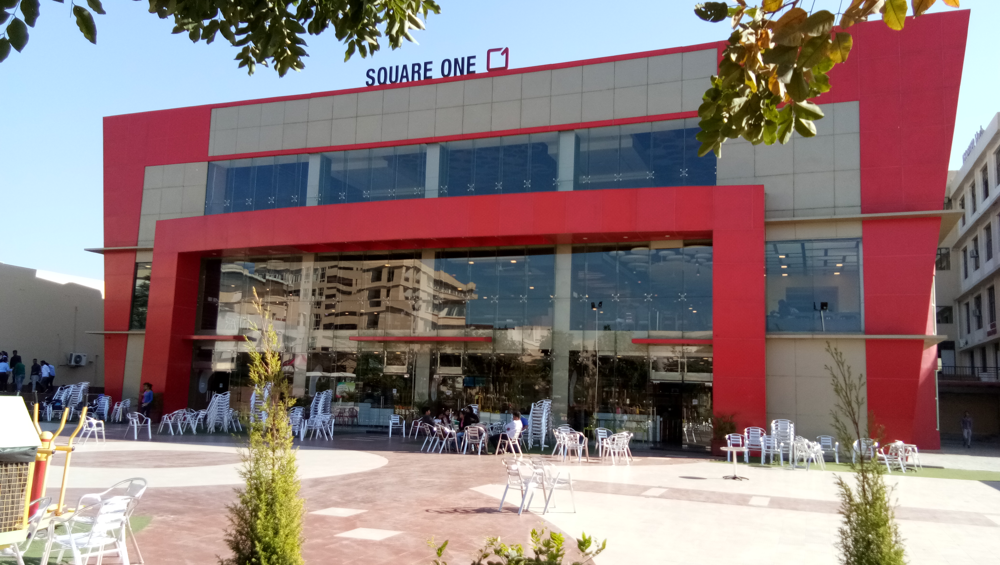
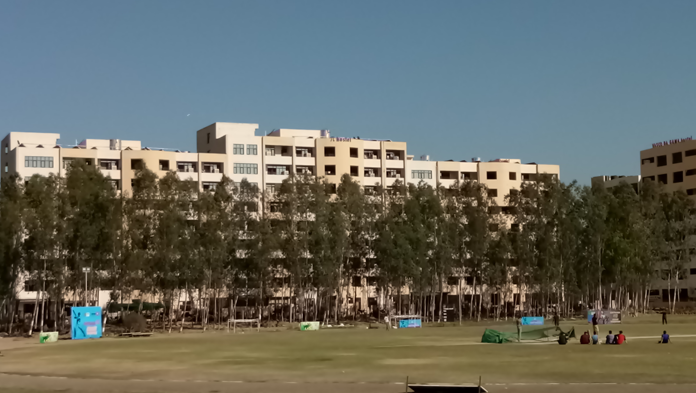
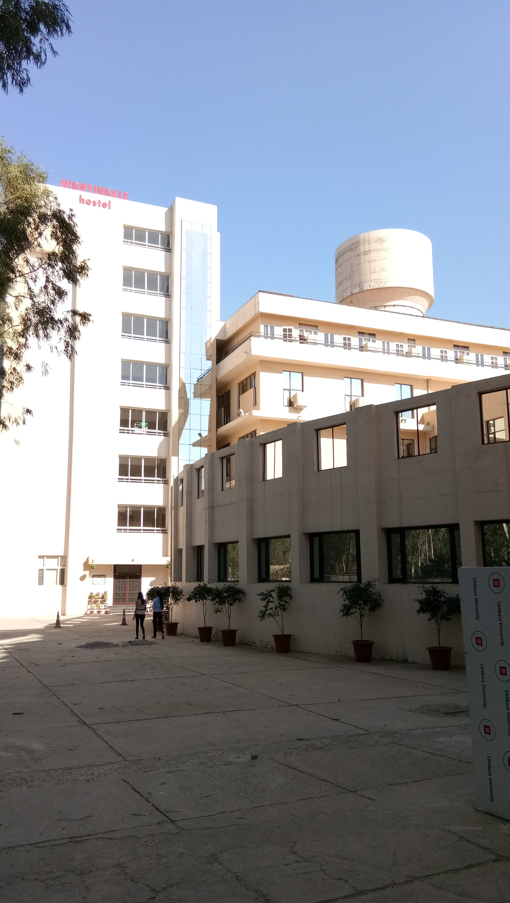
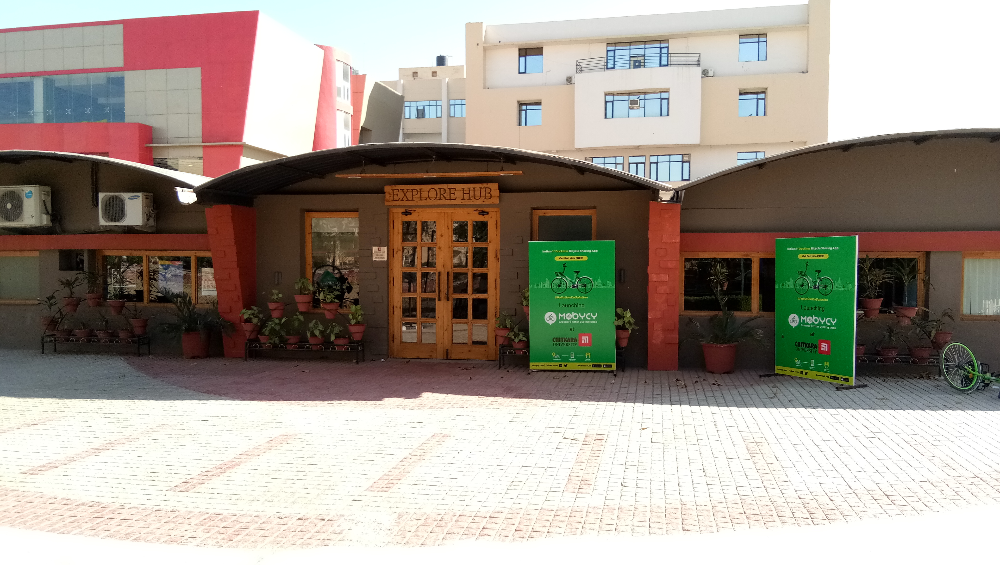
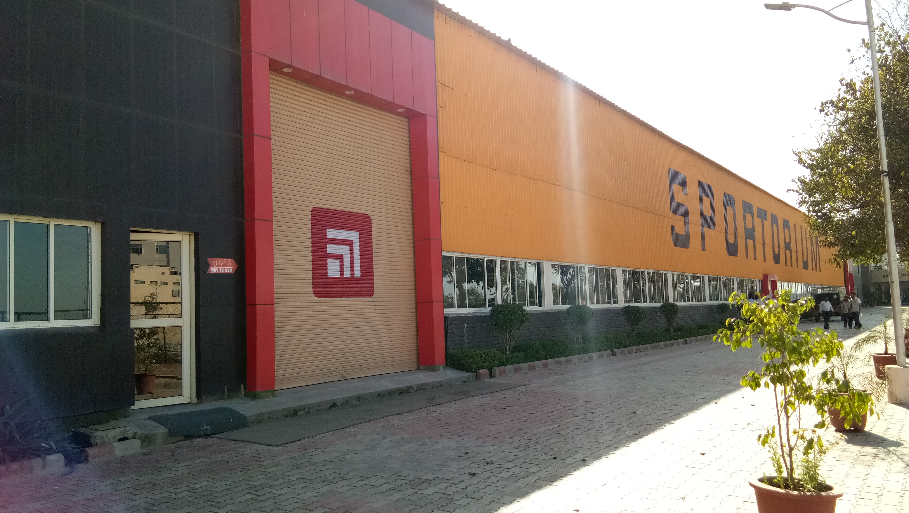
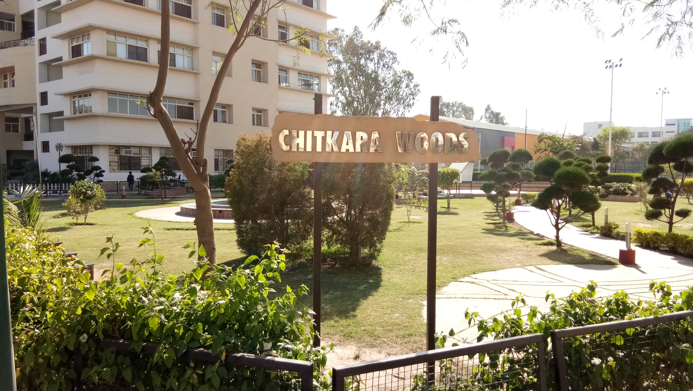
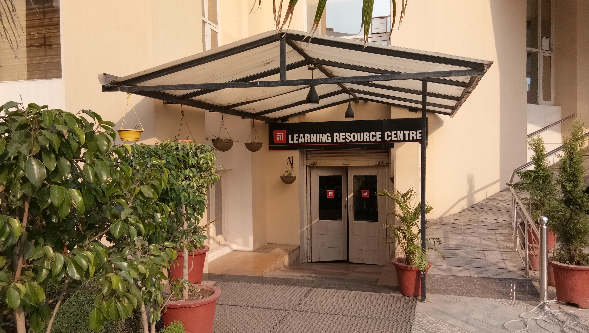
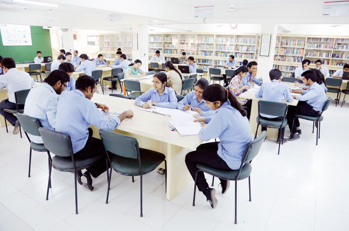

OTHERS
Square one
Located right in the heart of Chitkara University & our students.We aim to serve only best and tasteful food .With quickest delivery & friendly staff we hope you enjoy every minute you spend with us.All cafeterias LaPinoz, Burgrill & Havmore have menus that are designed by a team of professional dieticians, and offer nutritious and wholesome food to ensure a well-balanced diet. Fresh fruit juices, milkshakes, ice creams sundaes and even midnight snacks are available in these cafeteria.
Exploretorium

Chitkara University provides state-of-the-art conference halls with a seating capacity that act as a common ground for students, faculty and corporate personalities for regular interfaces, conferences and other events. At these platforms, you will come across various global thought leaders, academic gurus and corporate heads who will share their corporate experiences with you.
Hostel
 
Separate facilities for boys and girls, caring wardens and tight security arrangements ensure a pleasant stay, allowing students to focus on academics. Internet access and subscriber trunk dialing (STD) facilities ensure close contact with family and friends outside. The common rooms are fully equipped with TV, indoor games and other recreation facilities.
Explore Hub

The sense of developing a company and owning it, is what the youth of young India is aiming at. Earlier the better, the youth is looking at developing this sense of leadership in entrepreneurship at University level. One of the most dynamic University in Punjab, Chitkara University, has developed an apt environment for Student Startups to think, deliberate and work on new business ideas, innovate and evolve. The recent addition of EXPLORE HUB at Chitkara University, an incubator cum accelerator has attracted the attention of Mentors network Pan India, and who’s who in the Startup ecosystem. The Incubator designed in a very rustic, yet superbly crafted environment, offers a working capacity for over 40 Student Startups.
Sportorium

Sports have been an integral part of our univerity. They support the academics of the school and therefore foster success in life.Education may kindle the light of knowledge, but sports help to maintain the proper physique. Sports are also an important means of entertainment and a use for energy after long hours of study and thus sportorium is a perfect place for that.It offers various indoor games like table-tennis,carrom,chess etc as well as many outdoor games like basketball,volleyball,badminton etc.
Chitkara Woods

when you think of relaxing in after long hours of study & work chitkara woods is a perfect place for that.Its the fabulous place where one can forget about work load ,studies ,tensions & can have relaxing mind.Its the best place to go with your friends to spend good time.It always has nice atmosphere specially on windy days also fountain & soothing music works as icing & on the cake.
Library
 
The library services are the cornerstone of the education system at Chitkara University. The mission of library services is to facilitate creation of new knowledge through acquisition, organization and dissemination of knowledge resources. The library have spacious reading halls, periodical centres, group discussion rooms and online database browsing areas.The University library offer a wide range of materials in a variety of formats—from traditional books and serials to films, and multimedia and networked information from around the world.